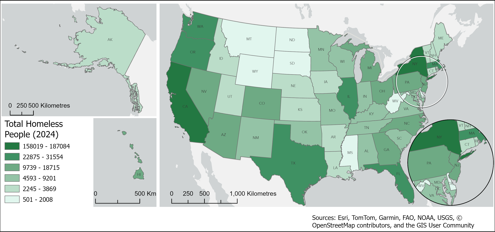
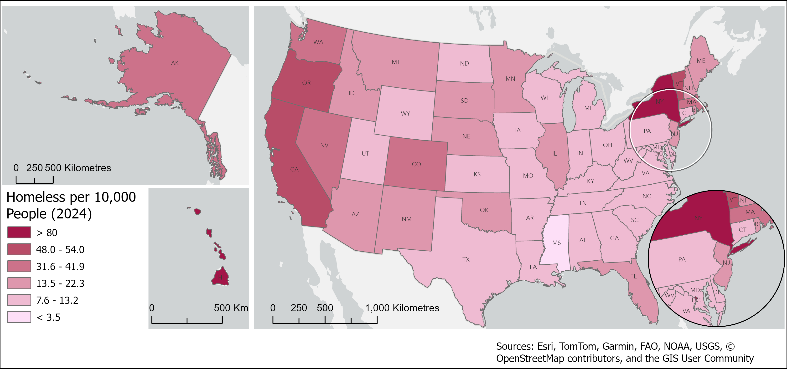
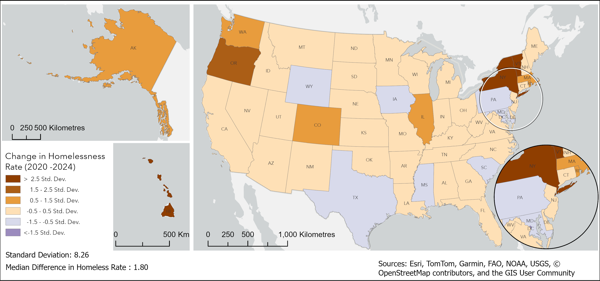
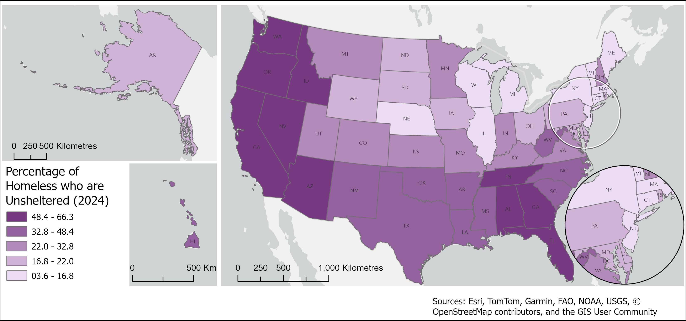
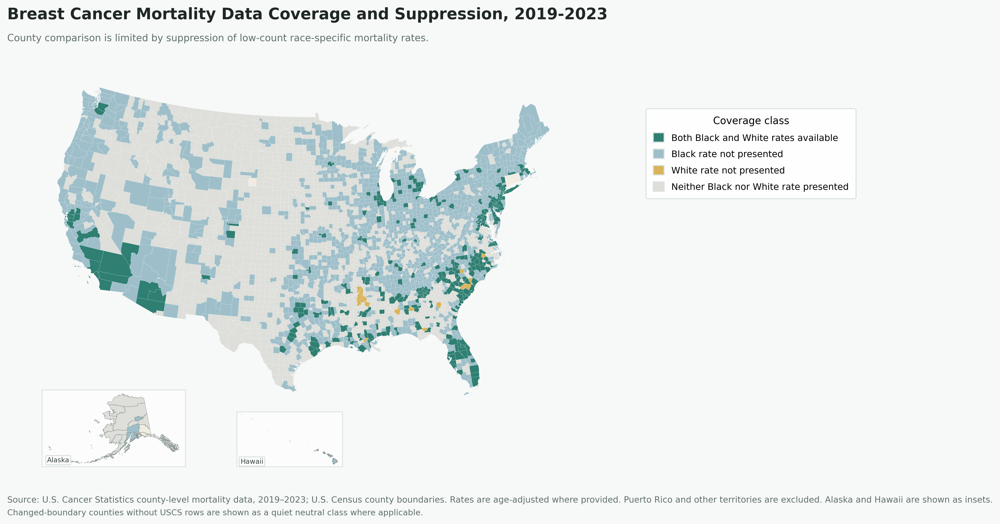
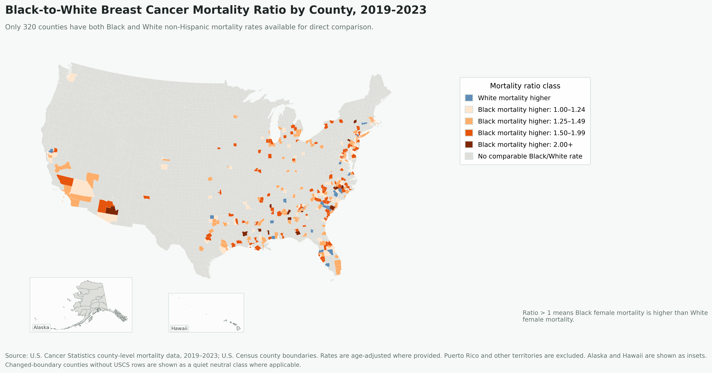

I use GIS to reveal public-interest patterns that are hard to see in raw data alone — turning data preparation, spatial analysis, cartographic design, and interpretation into clear visual stories.
Food availability is not the same as food accessibility.
This project compares general food locations with SNAP-supported access in Washington, D.C. to reveal gaps between food availability and meaningful food access for low-income communities.
Key insightFood presence does not equal accessibility.
Mapping Food Assistance Access Against Poverty in Washington, D.C.
This map compares food assistance infrastructure with tract-level poverty in Washington, D.C. SNAP retailers and farmers markets show where food access points exist, while the poverty layer shows where economic need is higher. The goal is to examine whether food access aligns with the communities most likely to need it.
How to use this map: Toggle poverty, SNAP retailers, farmers markets, and candidate access gaps to compare food assistance locations against areas of higher economic need.
Interactive map using public food access, SNAP retailer, census tract, and poverty context data.
What to Look For
Map question: Where do food assistance locations overlap with higher-poverty census tracts?
What to look for: Compare SNAP retailer locations against higher-poverty tracts. Areas with higher poverty and fewer nearby access points should be investigated further.
Key findingFood assistance locations are present across Washington, D.C., but their distribution should be interpreted against poverty concentration. Food presence alone does not prove meaningful access.
Candidate access gapsSeveral higher-poverty census tracts show limited nearby SNAP retailer coverage. These areas are not final conclusions, but they are useful candidates for deeper food-access review.
Limitation: This analysis uses straight-line distance from tract representative points and does not account for transportation, walkability, food price, store quality, or operating hours.
Who is most affected?
Food access gaps matter most when they overlap with economic vulnerability. Higher-poverty areas with fewer nearby SNAP-supported retailers should be treated as candidate areas for deeper food-access review, not as final conclusions.
This analysis can help identify areas where food access planning, SNAP retailer outreach, or deeper network-distance analysis may be useful.
Analysis Focus
The analysis separates food presence from SNAP-supported access and frames Southeast D.C. access gaps through an equity lens. Claims should be interpreted with current food retailer records, SNAP authorization status, and demographic context.
Methods
Prepare food location layers, classify SNAP-supported and non-SNAP locations, export GeoJSON, and use web mapping to communicate the difference between availability and practical access.
Data Sources
USDA SNAP Retailer Location Data
USDA Farmers Market Directory
U.S. Census ACS 2024 5-Year S1701 poverty table
U.S. Census ACS 2024 5-Year B03002 race/Hispanic origin table
U.S. Census TIGER/Line 2024 census tract boundaries
Limitations / Next Step
The web map is a screening tool for spatial patterns. The next step is to add measured network distance, transit access, or service-area analysis to better represent practical accessibility.
This project shows how food presence and practical food access can tell different spatial stories.
United States | Housing | 2020-2024
Changing Patterns of Homelessness in the United States
Homelessness varies by intensity, growth, and structure across states.
This project compares state-level homelessness using total count, population-adjusted rate, change from 2020 to 2024, and unsheltered percentage.
Important conceptRaw counts show burden. Rates show intensity.
Overview
Most states show low to moderate homelessness rates, while a smaller number of states drive national extremes. This project compares homelessness by total burden, population-adjusted intensity, change over time, and shelter status.
Visual Analysis
The following maps and charts compare homelessness by total count, population-adjusted rate, rate change, and unsheltered share.
Total Count vs Homelessness Rate

Total Homeless People, 2024

Homelessness Rate per 10,000 People, 2024
Use the slider to compare two perspectives. Total counts show where the largest number of people are experiencing homelessness, while rates show where homelessness is most intense relative to population.
Change in Homelessness Rate
Change in homelessness rate can be read in two ways. Absolute change shows how much the rate increased or decreased, while standard deviation change shows which states stand out as unusual compared with the national pattern.
Difference in Homelessness Rate, 2020-2024

Relative Change in Homelessness Rate, 2020-2024
Use the slider to compare two ways of reading change. Absolute change shows where homelessness rates increased or decreased the most, while standard deviation highlights which states stand out compared with the national pattern.
Structural Differences: Sheltered vs. Unsheltered Homelessness
Homelessness is not only a question of scale. States with similar homelessness rates can differ sharply in how homelessness is experienced. The unsheltered share shows where people are more likely to be outside the shelter system, while the bubble chart compares rate, unsheltered share, and total count together.
Rate vs. Unsheltered Share, 2024
This chart compares three dimensions at once: homelessness rate, unsheltered share, and total homeless count. California and Oregon show high unsheltered shares, while New York has a high homelessness rate but a much lower unsheltered share, showing a different structure of homelessness.
Percentage of Homeless People Who Are Unsheltered, 2024

This map shows where a larger share of people experiencing homelessness are unsheltered. Higher unsheltered shares appear across many western and southern states, while some northeastern states show lower unsheltered shares despite high overall homelessness rates.
Structural insightSame scale of problem, different structure. A high homelessness rate does not always mean a high unsheltered share, so policy responses should account for both intensity and shelter conditions.
This analysis helps separate where homelessness is largest, where it is most intense, where it is accelerating, and where unsheltered homelessness changes the policy response.
Analysis Focus
The project distinguishes large total counts from high per-capita intensity and uses change and unsheltered share to describe different forms of state-level housing pressure.
Methods
Compile state totals, calculate rates, compare 2020 and 2024 values, and prepare static maps and charts for rate, count-versus-rate, change, and unsheltered percentage.
Data Sources
U.S. Department of Housing and Urban Development AHAR / Point-in-Time homelessness data
U.S. Census population estimates
Project-derived rate, change, and unsheltered percentage calculations
Limitations / Next Step
Point-in-time counts are sensitive to local methods, timing, and definitions. Interpretation should account for differences in enumeration practices and local shelter systems.
This project shows why homelessness should be evaluated by scale, intensity, change, and shelter structure rather than by total counts alone.
United States counties | Public health
Racial Disparities in Breast Cancer Mortality in the U.S.
Racial disparities in breast cancer mortality are spatially structured, not random.
This project compares Black and White breast cancer mortality rates in counties where both values are available and maps where direct comparison is possible.
Key insightComparable-county ratios reveal where Black-to-White mortality differences can be evaluated directly, while suppression limits complete national comparison.
Analysis Focus
A mortality ratio greater than 1 means Black mortality is higher than White mortality in that county. Dual-data counties are required because suppressed low-count data means some counties cannot be compared directly.
Visual Analysis
Overall mortality context
This map shows county-level female breast cancer mortality rates for all races and ethnicities where data are available. It provides mortality context before comparing race-specific disparities.Open full-size map
Race-specific data coverage

Race-specific county mortality data are incomplete because low-count values are suppressed. Direct Black-to-White comparison is only possible in counties where both Black and White non-Hispanic rates are available.Open full-size map
Comparable-county mortality ratio

This map shows the Black-to-White female breast cancer mortality ratio for comparable counties. A ratio greater than 1 means Black mortality is higher than White mortality in that county.Open full-size map
Key findings
Only 320 counties have both Black and White non-Hispanic mortality rates available for direct comparison.
Among comparable counties, 299 counties have a Black-to-White mortality ratio greater than 1.
The average mortality ratio among comparable counties is 1.44.
The ratio map shows where direct county-level comparison is possible, while the coverage map shows why the analysis cannot be treated as a complete national county map.
Limitation noteOnly 320 counties have both Black and White non-Hispanic mortality rates available for direct comparison. The ratio map should therefore be interpreted as a comparable-county analysis, not a complete national county map.
Methods
Filter to comparable counties, calculate Black-to-White mortality ratios, map disparity patterns, and prepare the dataset for future spatial clustering analysis.
Data Sources
U.S. Cancer Statistics county-level mortality data
U.S. Census population data
County boundary layers
Project-derived Black-to-White mortality ratio calculations
Limitations / Next Step
Suppression and county-level aggregation limit interpretation. The maps should be read as county-level screening tools for spatial pattern recognition, not as evidence of individual risk or causal pathways.
This analysis is useful as a county-level screening tool for identifying where comparable mortality disparities can be mapped and where suppression limits interpretation.
A future next step is to run and document a defensible spatial clustering workflow after the comparable-county dataset is finalized.
This project shows how disparity mapping must account for both visible mortality patterns and the limits created by suppressed county-level data.
Interested in GIS, spatial analysis, or public-interest mapping work?
I’m looking for junior GIS analyst opportunities where I can apply spatial analysis, data cleaning, cartography, and web mapping to real-world planning, public health, housing, sustainability, and community problems.